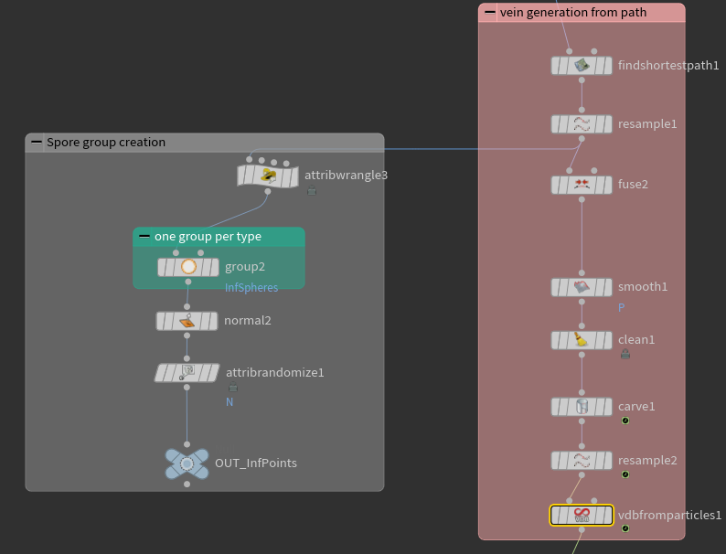
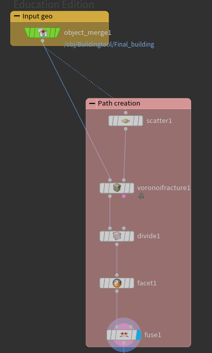

PROCEDURAL MOLD GENERATOR
This visual effect has been created as part of a larger-scale project and is currently in beta stages of development.
It has been created to work inside Unreal Engine as an HDA, the idea behind it is that it is able to generate a procedural mold system that
automatically adapts to any mesh passed as input, generating start and end points to progressively envelop the entire mesh working in a similar manner
to how slime mold naturally grows.
First, the target mesh gets brought into the system and fractured using a Voronoi, from which the paths will be generated. These paths, however, cannot be used directly and need to be treated.
To do this, first the target mesh is optimized based on the Voronoi fracture via faceting and then using a fuse node to remove unnecessary points.
After this, the corresponding start and end points are generated, the system is currently using 2 sets of points to generate the big and small veins, but internally they all work the same.
The mold simulation is then set up by detecting the paths needed between the start and end points, these paths then get smoothed out and resampled to give the system an
appropriate amount of points to trace the veins.
After this, the system uses a carve node to animate the growth, and then gets rendered into a VDB with a noise applied to give it a more organic feel.
The rendering and texturing is done directly in Unreal via a triplanar shader with an animated noise texture.

